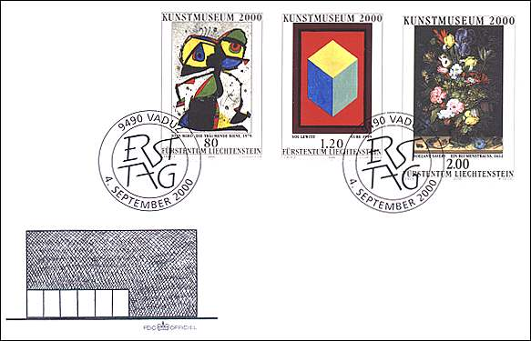
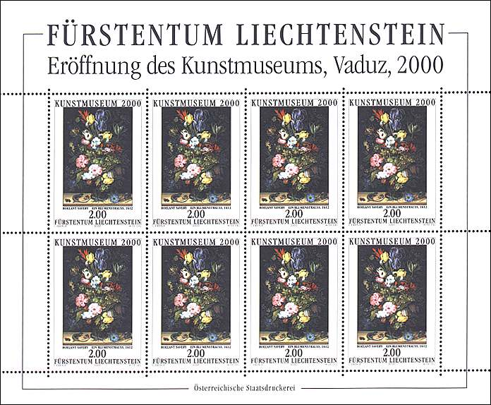

Stamps Are Not Born Equal
To Roelant Savery
The special stamps issued to mark the opening of the new Art Museum in Liechtenstein show typical works from three different artistic periods: 17th century Flemish painting, classic modern art and contemporary art. They indicate the range of the collections which exist in Liechtenstein. To be issued the 4th of September 2000, the set displays the following works of art:
-
80 Rp. Joan Miro, The Dreaming Bee, 1979.
-
1.20 Fr. Sol LeWitt, Cube, 1999.
-
2.00 Fr. Roelant Savery, A Bouquet of Flowers, 1612.
The stamps were designed by Cornelia Eberle and the steel engraving for the "Bouquet of Flowers" is the work of master engraver Wolfgang Seidel, both from Austria.

What puzzles me about these stamps is that they haven't the same size, what can be easily seen on the FDC above. The first two stamps of the set have the size of 30.8 x 42.82 mm (1.21" x 1.68") and the last one the size of 35 x 50 mm (1.38" x 1.97"). Why this difference? There is another difference, in printing technologies, the first two stamps being printed in Raster-Tiefdruck at Hélio Courvoisier S.A. La Chaux-de Fonds, Switzerland and the last in Kombinationsdruck: Raster / Stiechtiefdruck at Oesterreichische Staastdruckerei GmbH, Vienna, Austria.
In my opinion, the designer and the postal officials have decided to print two kind of stamps, some of them somehow cheaper, offered at lower face values, and an outstanding one, where the higher expenses (including the engraving and the printing costs) are counterbalanced by a higher price. All this is perfectly logical and understandable!
But this brings us to another, much more interesting question: Why the work of a quite unknown painter like Savary was printed bigger and nicer than that of a largely known Spanish painter Joan Miro? In my opinion, here is again the knowledge of the philatelic market that was decisive. It is known that the stamp collectors are rather "conservative" and prefer subjects that they find understandable, shown on works of art that look and feel great. Just give them a nice bouquet of beautiful flowers, and they will also swallow some limited quantities of cheaper dreaming bees and colored cubes. The demonstration that it has worked is that's you can see the whole set on this page.
And now, gentlemen and especially ladies, please accept as a present for your attention eight wonderfully painted bouquets of flowers that master Roelant Savery picked up for you, 388 years ago. No flying bees, no cubes, just flowers...

Do you like this article? Or, on the contrary, you have serious objections. Make use of PASIC Forum to express your opinion or send an e-mail to its author.
An extract of this article was published on the newsgroup rec.collecting.stamps.discuss. Here some reactions:
- Sir Victor, the explanation is as plain as the nose on your face. Since Liechtenstein is the maker of Showgard mounts they wish to sell more mounts. It is a miracle that all three weren't different sizes. Ralph
- What puzzles me is the "FDCs" are postmarked September 4, 2000, even SNAPS (a fictive territory, that concentrates all mistakes of stamp issuing and marketing - V.M.) doesn't predate FDCs! However???.....<VEG> we are quick learners! Neil.
- I'd say the size difference is because, as you say, the stamps are the product of different printers. You also state "But this brings us to another, much more interesting question: Why the work of a quite unknown painter like Savary was printed bigger and nicer than that of a largely known Spanish painter Joan Miro?" I'd say it is because (as you point out elsewhere) the painting by Savary is a more attractive painting. It also shows more fine detail, which an engraved process brings out well, as opposed to the blocks of colour in the 1,20 franc stamp and the... thing...on the 0,80 franc stamp. Dave (not a great fan of Joan Miro!).
| First
version: 09/01/00. Revised:
11/27/05. Copyright © 2000 by Victor Manta, Switzerland. All rights reserved in all countries. |
|
||